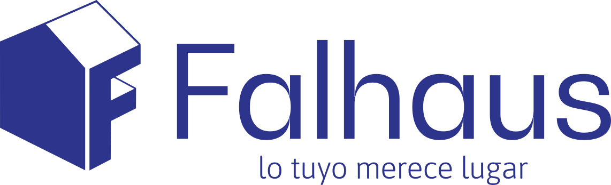

Brochure Institucional 2026Presentación institucional y Memoria Descriptiva del sistema constructivo modular industrializado.
Falhaus diseña, provee e implementa módulos habitacionales prefabricados bajo procesos de industrialización controlada, con estándar industrial previsible y tiempos de ejecución significativamente menores que los de la construcción tradicional.
La compañía provee unidades estructuralmente independientes, entregadas con alto grado de terminación de fábrica, que pueden funcionar de manera individual o combinarse para conformar conjuntos de mayor escala. El sistema ha sido concebido para responder con rapidez, calidad y trazabilidad frente a demandas que no pueden esperar los plazos habituales de una obra tradicional.
Falhaus SRL
Hipólito Yrigoyen 261 · Martínez · Provincia de Buenos Aires
www.falhaus.com
Diseñados desde el uso real, que resuelvan necesidades concretas de vivienda, trabajo y servicios.
A través de soluciones constructivas que se arman rápido, se adaptan fácil y mantienen estándares industriales consistentes.
Modulares, de armado rápido, accesibles, con calidad verificada y respaldo técnico integral para distintos contextos de uso.
Rapidez de implementación, claridad en todo el proceso, versatilidad del sistema, confianza en los materiales utilizados y pertinencia de cada decisión constructiva respecto del uso previsto.
Las administraciones provinciales y municipales enfrentan con frecuencia situaciones que requieren respuestas habitacionales rápidas, de calidad y escalables: demandas de vivienda postergadas, operaciones productivas que exigen alojamiento para personal, comunidades en entornos remotos, o coyunturas que demandan soluciones en ventanas de tiempo acotadas. La construcción tradicional, por su naturaleza, no siempre puede acompañar esas velocidades ni asegurar la previsibilidad que un programa público exige.
Falhaus propone un enfoque distinto, basado en la industrialización del proceso constructivo.
Habilitación de operación en semanas, no en meses. Las unidades se fabrican en planta bajo control de calidad y se instalan en sitio en horas. El tiempo de obra en terreno se reduce de manera radical, eliminando imprevistos propios de la construcción húmeda.
Capacidad de replicar unidades con estándar constante. El sistema permite operar por etapas sin comprometer la continuidad: las primeras unidades pueden estar operativas mientras se despliegan las siguientes, apto para cobertura territorial o expansión progresiva.
Materiales industriales de calidad verificada, garantía de fábrica y respaldo técnico local a lo largo de toda la vida útil de la unidad. Cada decisión constructiva responde a un uso real y está respaldada por la ingeniería del sistema.
Falhaus trabaja con socios industriales internacionales de primera línea, seleccionados por su capacidad productiva, el estándar de sus procesos y la consistencia de sus materiales. La incorporación de cada alianza industrial se realiza con auditoría directa en origen.
El equipo técnico de la empresa audita personalmente las fábricas de origen, verifica líneas productivas, controla estándares de ensamblado y selecciona proveedores en función de criterios técnicos exigentes. Los componentes se importan bajo este proceso de validación y las unidades se completan y nacionalizan en Argentina, integrando el ensamblaje final y el acondicionamiento técnico con equipos locales.
No se comercializan módulos cuyo origen y proceso no hayan sido revisados por el equipo de la empresa. La validación industrial en origen —sumada a la nacionalización y el control local del producto final— constituye uno de los pilares del estándar Falhaus.
El sistema constructivo Falhaus se basa en módulos habitacionales prefabricados, diseñados y fabricados bajo procesos de industrialización controlada, que permiten su transporte y posterior montaje en el sitio de implantación.
Los módulos se entregan como unidades estructuralmente independientes, con alto grado de terminación, que pueden funcionar de manera individual o combinarse entre sí para conformar viviendas, oficinas, espacios comunitarios u otros usos habitables.
El sistema prioriza la rapidez de ejecución, la eficiencia constructiva, la reducción de residuos en obra y el control de calidad, cumpliendo con los criterios de seguridad estructural y habitabilidad exigidos por la normativa técnica vigente.
Sistema constructivo modular industrializado — estructura metálica liviana.
La estructura principal está conformada por un sistema de perfilería metálica liviana de 2,5 mm de espesor, fabricada en acero estructural galvanizado, compuesta por:
El sistema está diseñado para soportar cargas verticales y horizontales, considerando las etapas de transporte, izaje, montaje y condiciones normales de uso.
Los muros están conformados por un panel sándwich de 75 mm de espesor compuesto por:
Este sistema garantiza aislamiento térmico, aislamiento acústico y protección frente a la humedad, de acuerdo con los criterios habituales de la construcción en seco.
La cubierta se resuelve mediante paneles sándwich de 75 mm de espesor sobre estructura metálica, con pendiente y tratamiento impermeable, incorporando:
El piso del módulo está compuesto por:
Las unidades contemplan la preinstalación o instalación completa de los siguientes sistemas, según el proyecto aprobado:
Todas las instalaciones se encuentran integradas al sistema modular, permitiendo una rápida conexión en el sitio.
El sistema está diseñado para apoyarse sobre fundaciones tradicionales, que pueden resolverse mediante:
La definición final de la fundación queda sujeta al estudio de suelo, la normativa local y el proyecto aprobado por la autoridad competente de la jurisdicción.
El proceso de montaje se desarrolla mediante las siguientes instancias:
El proceso de montaje es rápido, limpio y de mínima interferencia con el entorno, reduciendo significativamente los tiempos de obra y la afectación al predio y al entorno circundante.
El sistema constructivo Falhaus es apto para los siguientes destinos:
El uso final estará sujeto a la zonificación y normativa urbanística vigente de cada municipio.
El sistema Falhaus constituye un sistema constructivo industrializado, adaptable a distintas configuraciones y escalas, que cumple con los principios de seguridad, durabilidad y habitabilidad exigidos por la normativa técnica vigente. La empresa entrega una solución llave en mano sin obra húmeda en el sitio de instalación, con trazabilidad completa del proceso productivo.
La presente Memoria Descriptiva constituye la síntesis técnica del sistema. Falhaus pone a disposición los planos técnicos del sistema para revisión por parte de los organismos técnicos que así lo requieran.
La configuración del sistema Falhaus ha sido concebida contemplando condiciones de uso que incluyen amplitud térmica significativa, exposición a vientos intensos, humedad y regiones de difícil accesibilidad logística. Los módulos incorporan aislaciones configurables en función del clima y del uso previsto, permitiendo adaptar el nivel de performance térmica y acústica al entorno específico de cada proyecto.
Espesores de panel de 50/75/100 mm, con materiales aislantes de distintas performances: lana de roca, EPS, PU.
Revestimientos exteriores en chapa de acero o aleación de aluminio tratados para exposición intemperie.
Ventanas de doble vidrio hermético (DVH) y, en los modelos premium, vidrio Low-E templado.
Protección contra la corrosión, especialmente relevante en ambientes húmedos, salinos o con alta variabilidad climática.
Techos con aislación de espuma PU y sistemas de climatización posibles en fábrica: aire acondicionado y calefacción.
Diseñado para operar en regiones frías, ventosas o húmedas, manteniendo condiciones de habitabilidad adecuadas a lo largo del año.
Todos los modelos son modulares, transportables y personalizables según el proyecto. Se comparte una base industrial común y un estándar de ensamblado verificado, lo que permite combinar modelos dentro de un mismo programa en función del uso asignado a cada unidad.
Solución principal para programas habitacionales de escala. Se transporta cerrada para optimizar la logística y se despliega en destino para alcanzar su superficie completa. Admite hasta 5 ambientes y configuraciones personalizables por proyecto. Equipamiento posible: baño completo, cocina y mobiliario básico integrado.
Unidad compacta y plegable. Apta como oficina operativa, dormitorio de apoyo, depósito técnico o módulo auxiliar en un programa de mayor escala. Aislación configurable según clima.
Módulo con gran presencia visual, pensado para usos de hospedaje o representación institucional. Equipamiento integrado completo: cocina, baño, climatización.
Tope de línea. Estructura en acero galvanizado en caliente, revestimiento en aleación de aluminio de alta performance, terminaciones de alto nivel y equipamiento completo. Apto para usos institucionales de alta visibilidad.
Solución de densificación: integra dos unidades independientes en una misma implantación, con mayor capacidad por superficie. Mantiene el mismo estándar industrial de la línea.
A continuación se presenta una orientación sobre qué modelos resultan más aptos para cada tipo de programa, sin perjuicio de que cada operación pueda definir configuraciones específicas según la necesidad de la jurisdicción.
| Necesidad institucional | Modelo recomendado | Observaciones |
|---|---|---|
| Vivienda para comunidades o familias beneficiarias de un programa habitacional | Falhaus Nómada 36 o 72 | Admite hasta 5 ambientes, escalable por etapas, estándar repetible |
| Alojamiento para personal técnico, operativo o de emergencia en localidades remotas | Falhaus Nómada / Refugio | Despliegue en horas, reubicable según evolución del programa |
| Oficinas institucionales, puestos de atención o espacios administrativos en terreno | Falhaus Refugio / Horizonte | Instalación rápida, equipamiento según uso |
| Espacios de representación institucional o usos con requerimiento de visibilidad | Falhaus Horizonte / Nova | Estética contemporánea, equipamiento completo |
| Operaciones de densificación o alojamiento con mayor capacidad por superficie | Falhaus Altavista | Dos unidades integradas en altura, mismo estándar |
Cada programa puede combinar distintos modelos bajo un mismo estándar constructivo. La empresa desarrolla con la contraparte institucional la configuración específica, el cronograma de despliegue y el plan logístico adecuado al territorio.
El trabajo con una organización pública requiere previsibilidad, trazabilidad documental y acompañamiento técnico a lo largo de todo el proceso. Falhaus estructura cada proyecto en cuatro instancias claras.
Se realiza una escucha inicial del problema a resolver, se analizan las condiciones del territorio y se identifica qué modelo o combinación de modelos resulta más apta para el programa.
Se elabora una propuesta personalizada con definición de cantidad de unidades, configuración, nivel de terminación, opciones de personalización y cronograma de entrega. Se acompaña la documentación técnica necesaria para los procesos internos de validación de la contraparte.
Las unidades se fabrican bajo control industrial, se transportan al sitio de implantación con logística especializada, se posicionan y se dejan operativas. La instalación por unidad se realiza en horas, según acceso y condiciones del sitio.
Cada módulo cuenta con garantía de fábrica y respaldo del equipo técnico de Falhaus. El acompañamiento continúa luego de la puesta en funcionamiento, asegurando la vida útil operativa de la unidad.
Falhaus provee acompañamiento técnico integral desde la consulta inicial hasta la postventa, bajo el formato de interlocutor único. Esto significa que la organización pública dialoga con un equipo responsable de la totalidad del proceso, evitando la fragmentación habitual en proyectos donde intervienen múltiples actores.
Para la definición de la configuración más adecuada a cada necesidad.
Preparación de la documentación necesaria para los trámites internos de la jurisdicción.
Desde el origen de fabricación hasta el sitio de implantación final.
Y entrega operativa de cada unidad con controles de calidad.
Con garantía de fábrica y disponibilidad de servicio local.
Cada unidad queda documentada desde fabricación hasta puesta en uso.
Que cada unidad entregada se traduzca en una solución real, operativa y auditable, sin fricciones innecesarias para la administración.
Falhaus ofrece a las organizaciones públicas una solución constructiva industrializada, verificada en origen, técnicamente respaldada y operativamente previsible. El sistema permite habilitar unidades habitables en ventanas de tiempo significativamente menores que las de la construcción tradicional, con trazabilidad completa del proceso y capacidad real de escalar por etapas.
Habilitación en semanas. Instalación por unidad en horas.
Unidades repetibles bajo un mismo estándar industrial, desplegables por etapas.
Materiales industriales de calidad verificada, alianzas auditadas en origen, garantía de fábrica y acompañamiento técnico local.
La empresa se pone a disposición de la jurisdicción para evaluar en detalle la viabilidad técnica y operativa de un programa específico, y acompañar cada instancia del proceso con el estándar que la magnitud de la decisión amerita.
Hipólito Yrigoyen 261
Martínez — Provincia de Buenos Aires
República Argentina
Web: www.falhaus.com
Teléfono: +54 9 11 4446 0130
Instagram: @somosfalhaus
Falhaus agradece la oportunidad de presentar el sistema y queda a disposición para ampliar cualquier aspecto técnico, económico o logístico que la jurisdicción considere necesario para avanzar en el análisis.